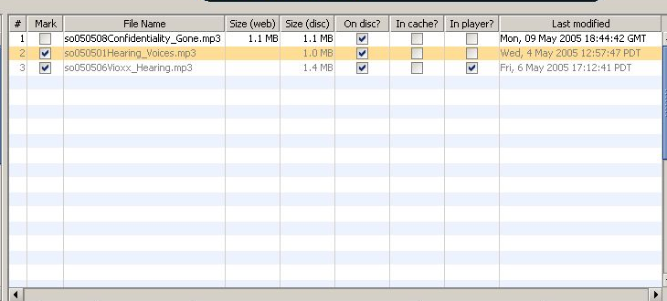
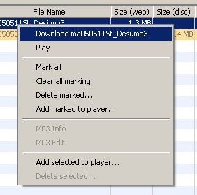
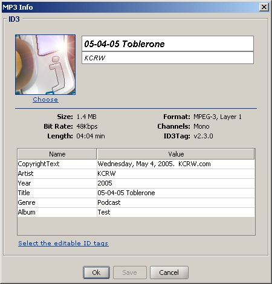

Enclosures and Files are represent a podcast but an Enclosure means the media file specified in the feed and File represents the media on your computer. Whereas the Enclosure is not downloaded yet a File can be still on your hard disk even when the source was pulled by the feed provider. We are going to use Enclosure when we mean the element in the feed or the media file on the provider's server and File when we mean that the media is downloaded onto your computer and/or player. In case the difference does not matter we speak about a podcast.

The enclosure & file table contains nine columns:
| 1. | # | Index of the column |
| 2. | Mark | If check the podcast is marked to executes some action on a group of podcasts |
| 3. | File Name | name of the file |
| 4. | Size (web) | the size described by the enclosure |
| 5. | Size (disc) | the actual size of the file on the local disc |
| 6. | On disc? | selected if the podcast is available on the local disc |
| 7. | In cache? | selected if the podcast is in jPodder's cache |
| 8. | In player? | selected if the file was transfered onto a player |
| 9. | Last modified | date & time of the last modification to the file |
You can work with the files by either using jPodder's Menu ('Enclosures') as well as the context menu in the right table which for example under Windows is activated by pressing the right menu button while the mouse hoovers over the file table:

Note: The entries in the context menu are enabled or disabled (gray) depending on the position of the mouse and therefore depending on the underlying file.
The file context menu contains these entires:
| Download ... | downloads the enclosure from the podcast provider |
| Play | plays the podcast directly without transferring it to the player (you may not be able to pause the playing) |
| Mark all | marks all podcasts in the table |
| Clear all marking | unmarks all enclospodcastsures in the table |
| Delete marked... | deletes all podcasts that are marked |
| Add marked to player... | transfers all podcasts to the currently selected player |
| MP3 Info | views all the tags of the podcasts |
| MP3 Edit | allows you to edit some of the tags of the podcasts |
With the podcast tag dialog you can view / edit the tags of audio (mp3) file. This way you can fine control how a player will display the audio file. The list of tags shown are the ones available in the audio file.

Note: The picture shows the edit version but the view version just misses the links and the tag values are not editable.
The file tag edit / view dialog contains:
| Choose | allows you to select artwork for the file (picture) |
| Name | name of the tag |
| Value | current content of the tag |
| Select the editable ID tags | Link allowing you to to be rewriten. These tags are then listed below. |